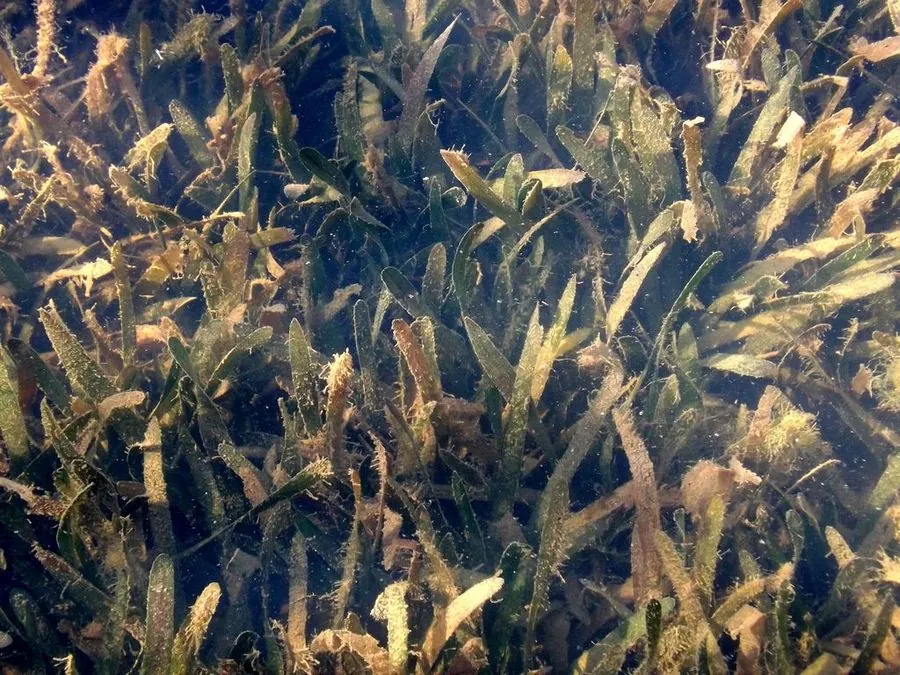

水生植物 · 植物界
苦草 Vallisneria natans

水鳖科多年生沉水草本，叶片带状如海带，雌花浮水授粉，是水族箱和河蟹养殖的常见水草，可净化水质。
- 分类
- 门被子植物门纲木兰纲目泽泻目科水鳖科属苦草属
- 栖息环境
- 池塘、湖泊、河沟的浅水区，喜清澈、阳光充足的静水
- 地理分布
- 原产东亚，中国各地淡水水域常见，日本、朝鲜半岛也有分布
- 保护级别
- 暂无评估
物种志
苦草为水鳖科苦草属多年生沉水草本，具匍匐根状茎，叶片基生、带状，长 30–200 厘米，宽 4–10 毫米，绿色或带紫褐色斑纹，边缘有细齿。雌雄异株：雄花小、生于水下，脱落后浮到水面开放；雌花有螺旋状的长花梗，将花托举到水面授粉，花期 8–10 月；果实为圆柱形蒴果，内含多数种子。
苦草原产东亚，中国各地池塘、湖泊和河流中常见，喜温暖、阳光充足、水质清澈的静水或缓流，靠根状茎和种子繁殖。它叶片带状、丛生如草，是水族箱中常见的后景水草，可为鱼虾提供隐蔽场所；在河蟹养殖中，苦草是重要的“水草牧场”，供蟹栖息和取食。苦草还能吸收水中氮磷、抑制藻类，常用于人工湿地和水体生态修复，但水体浑浊、光照不足时生长不良。
形态与习性
- 株高叶片长 30–200 厘米，宽 4–10 毫米
- 花期8–10 月，雌花浮水授粉
- 果期9–11 月，圆柱形蒴果
- 光照喜充足阳光，需水质清澈
- 水分沉水生长，适宜水深 50–150 厘米
- 土壤塘泥或沙质底质
- 繁殖根状茎分株与播种
- 主要用途水族箱水草、河蟹养殖、水体净化
趣味知识
- 苦草雌花有螺旋状长花梗，能把花托到水面完成授粉，雄花则脱落后浮到水面。
- 叶片带状丛生，像水下的草坪，是水族箱常见的后景水草。
- 在河蟹养殖中，苦草是重要的水草牧场，供蟹栖息和取食。
- 苦草能吸收水中氮磷、抑制藻类生长，常用于水体生态修复。